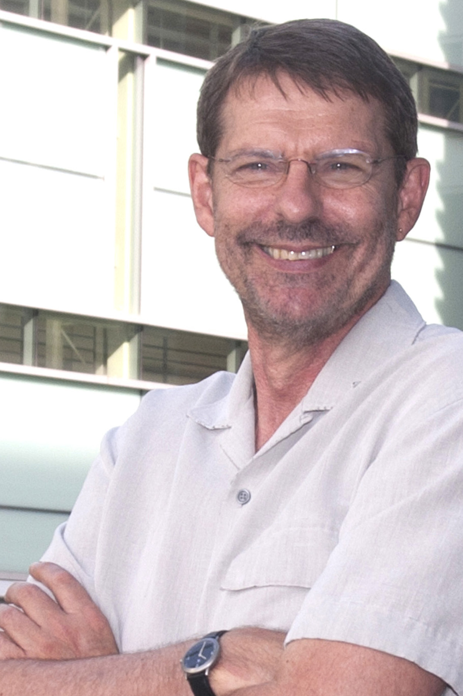
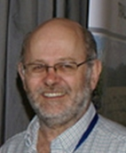

Invited Speakers
We are privileged to have a distinguished list of invited speakers that span the breadth of themes for the conference. Below is a brief biography of each of the invited speakers Ric Coe, Noel Cressie, Ian James, Christine Müller, Alan Welsh, and Thomas Yee appears below. Noel and Thomas are also presenting separate short courses on Sunday 1 December.
Ric Coe
Talk: Option x Context interaction and the design of multi-environment trials.
Noel Cressie,
Talk: Spatio-temporal smoothing of CO2 retrievals
Short course: Statistics for Spatio-Temporal Data
Ian James
Talk: Host-viral interactions: Some statistical immunogenetic issues
Christine Müller
Talk: Prediction of growth processes
Alan Welsh
Talk: Information criteria for selecting linear mixed models
Thomas Yee
Talk: Generalized Linear Models: Some thoughts and work 40 years on
Short course: Vector Generalized Linear and Additive Models
Ric Coe
Talk: Option x Context interaction and the design of multi-environment trials.
Breeders have long recognised and exploited GxE interaction. More recently we
have become aware of the interactions between almost all ‘options’
(technologies) for smallholder farmers and their context, with context being
defined by social, economic and environmental factors. The talk will explore
implications for the design of trials to investigate these interactions.
 For many years I have been based in East Africa, working with the World
Agroforestry Centre (ICRAF), one of the network of R+D organisations that
are part of the CGIAR. The research focuses on agricultural and
environmental problems of smallholder agriculture in developing countries
and my role has been to provide research methods support to research teams.
This means helping scientists and students improve research quality through
using statistical methods and principles. It requires getting involved in
all stages of R+D, from design of projects to planning individual studies,
data collection and management, analysis and interpretation.
For many years I have been based in East Africa, working with the World
Agroforestry Centre (ICRAF), one of the network of R+D organisations that
are part of the CGIAR. The research focuses on agricultural and
environmental problems of smallholder agriculture in developing countries
and my role has been to provide research methods support to research teams.
This means helping scientists and students improve research quality through
using statistical methods and principles. It requires getting involved in
all stages of R+D, from design of projects to planning individual studies,
data collection and management, analysis and interpretation.
At the same time I have been working on projects that aim to increase the effectiveness of research methods support in the national institutes and universities in countries where we work.
Before joining ICRAF I was a lecturer in the Department of Applied Statistics, University of Reading, UK. About 5 years ago I decided to make my job with ICRAF half-time, and spend the remaining time with the Statistical Services Centre of that university. That work is also centred on supporting research methods to agricultural research in East and South Africa through projects that focus on agro-ecological intensification.s. Email Ric Coe
Back to topNoel Cressie
Talk: Spatio-temporal smoothing of CO2 retrievals
Short course: Statistics for Spatio-Temporal Data
 Noel Cressie was born in Fremantle, WA, and he received the Bachelor of Science degree with first class honours in Mathematics from the University of Western Australia and the MA and PhD degrees in Statistics from Princeton University.
He was Lecturer and Senior Lecturer at The Flinders University of South
Australia; was Professor of Statistics and Distinguished Professor in
Liberal Arts and Sciences at Iowa State University; and was Professor of
Statistics, Distinguished Professor of Mathematical and Physical Sciences,
and Director of the Program in Spatial Statistics and Environmental
Statistics at Ohio State University. He is currently Distinguished Professor
in the National Institute for Applied Statistics Research Australia (NIASRA)
at the University of Wollongong.
He is the author of around 250 refereed articles and of three books, including "Statistics for Spatio-Temporal Data," with Christopher K. Wikle, 2011 (Wiley). His research interests are in the statistical modeling and analysis of spatial and spatio-temporal data, in Bayesian and empirical-Bayesian methods, and in environmental sciences. Email Noel Cressie
Back to top
Ian James
Talk: Host-viral interactions: Some statistical immunogenetic issues
Ian James has been involved in the development
and application of statistical methods across a wide range of areas,
beginning with his early work at CSIRO, as an academic and Director of the
Statistical Consulting Group at the University of WA and currently as
Professor of Mathematics and Statistics and Head of Biostatistics in the
Centre for Clinical Immunology and Biomedical Statistics (CCIBS), a
collaborative research centre between Murdoch University and Royal Perth
Hospital within the Institute for Immunology and Infectious Diseases.
His recent research has focussed on the development of novel statistical
methodology and integration of powerful and new approaches in the analysis
of HIV clinical and cohort data, Type 1 diabetes and multiple sclerosis, in
particular. His methodological interests include survival analysis, censored
data problems, analysis of host-viral and other genetic association studies
and longitudinal mixed models.
Professor James has held the positions of President of the Statistical
Society of Australia and Editor of the Australian Journal of Statistics.
Back to top
Christine Müller
Talk: Prediction of growth processes
Prof. Dr. Christine Müller is Professor of Statistics Professor of Statistics with Applications in Engineering in the Department of Statistics at the University of Dortmund, Germany. Born and educated in Berlin, working as biometrician for some years after her PhD in Berlin, she came to Dortmund via lecturer positions and professorships at universities in Berlin, Göttingen, Oldenburg and Kassel and research in mathematical statistics. Her current research interests are Robust Statistics, Design of Experiments, Cluster analysis and Image Analysis, Biostatistics and Engineering Statistics. She is Editor-in-Chief of Statistical Papers and Chair of the DAGStat, the association which includes all German societies in statistics. Email Christine Müller
Back to top
Alan Welsh
Talk: Information criteria for selecting linear mixed models
Professor Alan Welsh has expertise in statistical theory, stochastic analysis and modelling and applied statistics, and applies this knowledge in many areas of research including conservation, behavioural and terrestrial ecology, wildlife and habitat management, physics, vision science and geodesy. Email Alan Welsh
Back to top
Thomas Yee
Talk: Generalized Linear Models: Some thoughts and work 40 years on
Short course: Vector Generalized Linear and Additive Models
Thomas Yee is Senior lecturer at the University of Auckland. After graduating from Auckland with a PhD he spent two years at the medical school as a research fellow. He then took up a half-time lectureship in Statistics at the Albany Campus of Massey University, before becoming a lecturer at the University of Auckland. His research interests are nonparametric regression and generalized linear models, with particular application to medical studies and ecology. Statistical computing is also a strong interest. Email Thomas Yee
Back to top
Last updated 11 July 2013